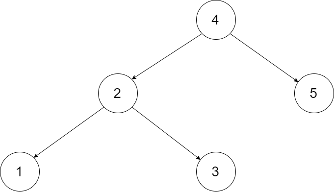
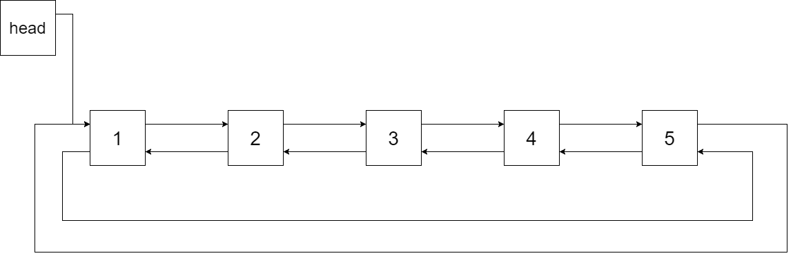
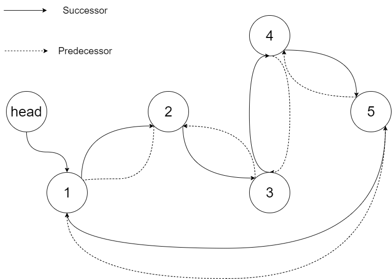

| Category | Difficulty | Likes | Dislikes |
|---|---|---|---|
| Algorithms | Medium | 2727 | 243 |
linked-list | stack | tree | depth-first-search | binary-search-tree | binary-tree | doubly-linked-list
facebook | tiktok | amazon | microsoft | oracle | nvidia
Convert a Binary Search Tree to a sorted Circular Doubly-Linked List in place.
You can think of the left and right pointers as synonymous to the predecessor and successor pointers in a doubly-linked list. For a circular doubly linked list, the predecessor of the first element is the last element, and the successor of the last element is the first element.
We want to do the transformation in place. After the transformation, the left pointer of the tree node should point to its predecessor, and the right pointer should point to its successor. You should return the pointer to the smallest element of the linked list.
Example 1:

Input: root = [4,2,5,1,3]

Output: [1,2,3,4,5]
Explanation: The figure below shows the transformed BST. The solid line indicates the successor relationship, while the dashed line means the predecessor relationship.

Example 2:
Input: root = [2,1,3]
Output: [1,2,3]
Constraints:
[0, 2000].-1000 <= Node.val <= 1000